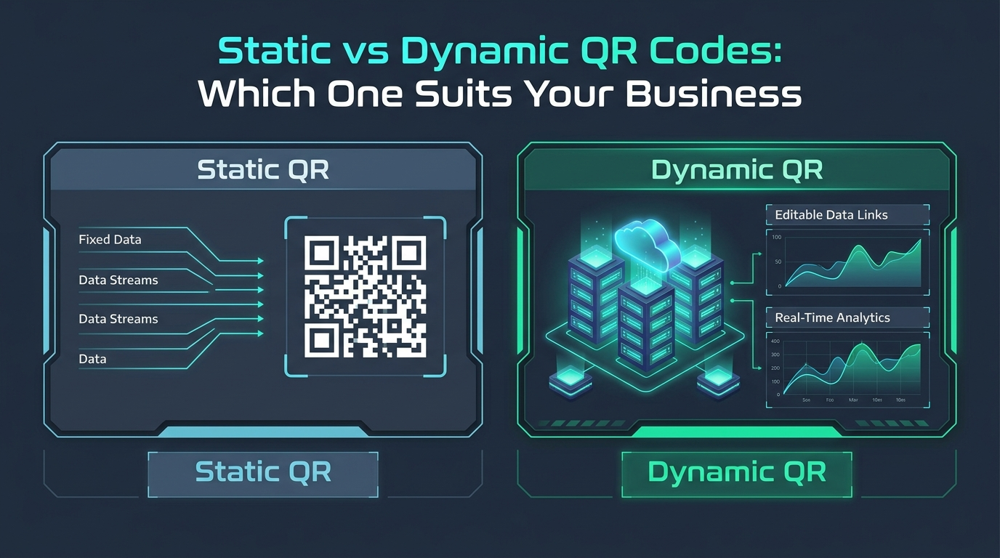

Static vs Dynamic QR Codes: Which One Suits Your Business?
Integrating QR codes into packaging, marketing collateral, and customer touchpoints is no longer optional—it is a core business standard. However, when initiating an implementation, decision-makers are immediately confronted with a fundamental technical choice: Static vs Dynamic QR Codes. Choosing the wrong architecture can lead to broken customer experiences or unnecessary recurring operational costs.

Understanding the Core Technology
The difference between static and dynamic QR codes lies in how payload data is encoded and processed:
- Static QR Codes: Encodes target data (e.g., Wi-Fi network credentials, plain text, fixed URLs, or vCard contact structures) directly into the matrix payload. Scanners parse this raw data directly without communicating with an intermediate routing engine.
- Dynamic QR Codes: Embeds a shortened intermediate URL that redirects the client to the ultimate destination via a central server. This allows real-time destination adjustments and analytics tracking.
When to Choose Static QR Codes
Static QR codes excel in scenarios prioritizing permanence, security, operational simplicity, and zero maintenance overhead.
- Zero Server Infrastructure Dependency: Because data is decoded entirely on the client's device, static QR codes remain functional even if external SAAS redirect platforms suffer downtime.
- Absolute Data Privacy & Security: No intermediary server intercepts or logs user metadata during scanning, making static QR codes ideal for confidential internal networks or sensitive contact exchanges.
- Zero Recurring Operational Costs: Once generated, static QR codes incur no subscription costs or licensing fees, regardless of scan volume.
- Permanent Lifespan: A static QR code never expires as long as the underlying target payload (such as a Wi-Fi configuration or phone number) remains active.
When to Choose Dynamic QR Codes
Dynamic QR codes are engineered for agile, data-driven enterprise marketing operations where content updates and analytics are critical.
- Post-Print Destination Editing: Update target URLs behind deployed physical print runs, preventing costly reprinting caused by broken or redirected links.
- Comprehensive Scan Analytics: Capture actionable telemetric data, including scan location, client device type, timestamp trends, and total engagement volume.
- Lower Pattern Matrix Density: Storing short proxy URLs keeps the visual grid sparse, enabling fast scanning even at small physical print sizes.
Direct Feature Comparison
| Evaluation Criteria | Static QR Code | Dynamic QR Code |
|---|---|---|
| Data Processing Location | Client-Side (Local) | Server-Side (Redirection) |
| Editable Payload | No (Hardcoded) | Yes (Real-time update) |
| Scan Telemetry & Analytics | Zero Tracking | Detailed Telemetry |
| Third-Party Vendor Risk | Zero Dependency | High Vendor Lock-in |
| Total Cost of Ownership | Free / Permanent | Recurring Subscription |
Deploy Static QR Codes for: On-site Wi-Fi credentials, physical business cards (vCard), static support hotline dialing, offline utility tools, and privacy-focused workflows.
Deploy Dynamic QR Codes for: Seasonal promotional campaigns, retargeting funnels, dynamic event registration pages, and high-frequency A/B marketing tests.
Final Verdict
Selecting between Static and Dynamic QR codes ultimately depends on your strategic requirements. If your goal is to deliver zero-cost, permanent access while respecting user privacy and avoiding server dependencies, client-side static QR codes generated by tools like MatrixQR are the optimal technical choice. For evolving marketing initiatives requiring tracking metrics and real-time destination modifications, dynamic architectures provide the necessary flexibility.